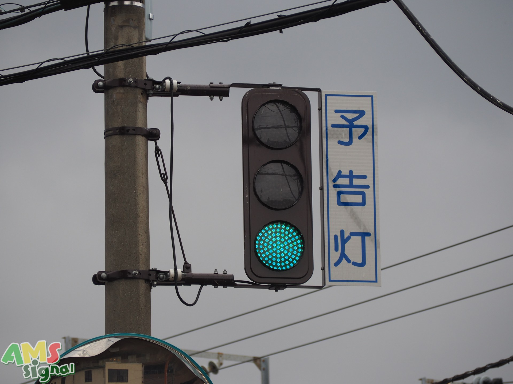
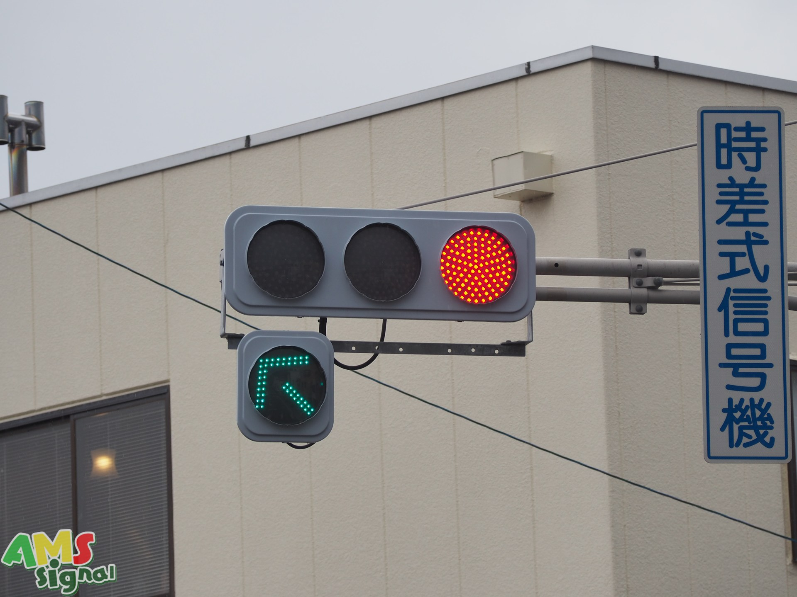
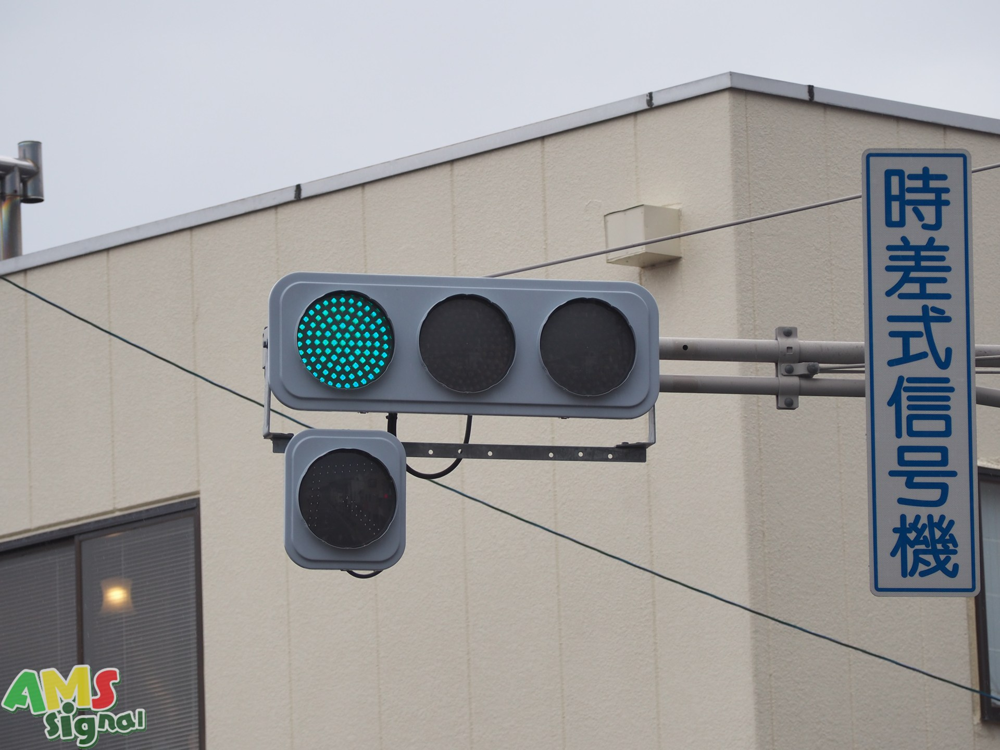
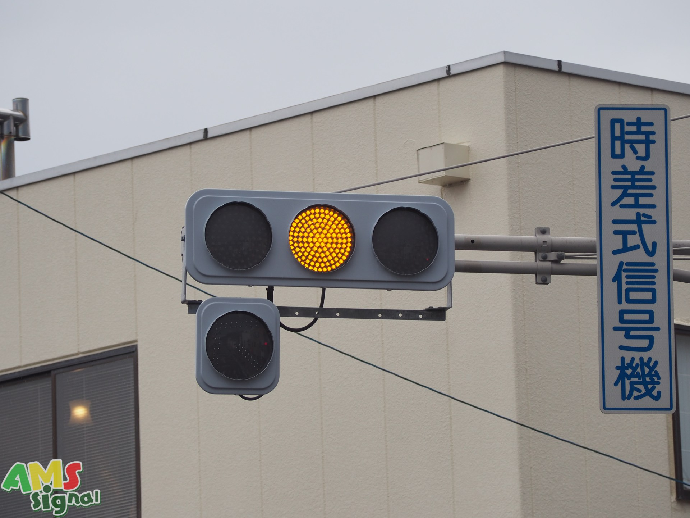
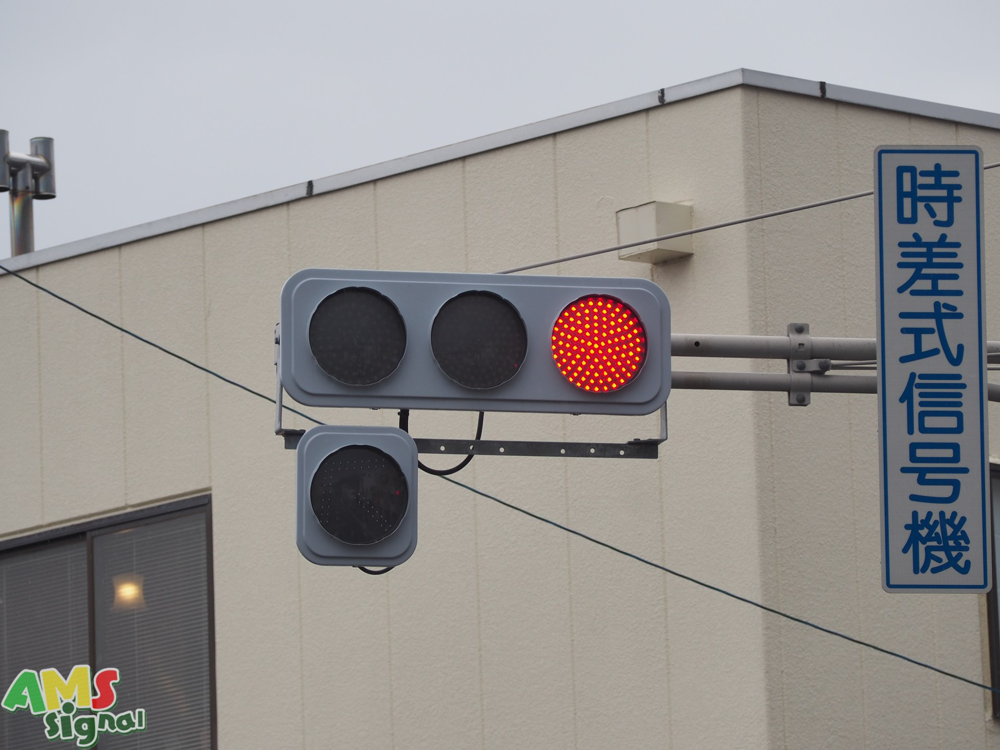

塩尻市

この交差点は電線地中化ついで的な感じで美装化され、同交差点内にあった電球式やLED灯器も電材低コストに更新されたのですが....
なぜか予告灯だけ更新されずに残ってました！
塩尻駅入口（更新前） 2024年12月に更新確認

塩尻駅入口交差点の取り残されていた予告灯の更新後です。
塩尻駅入口（更新後）




この交差点には斜め矢印が設置されています。特殊制御で、赤→赤+矢印→青→黄色→赤（最初に戻る）という制御になっています。